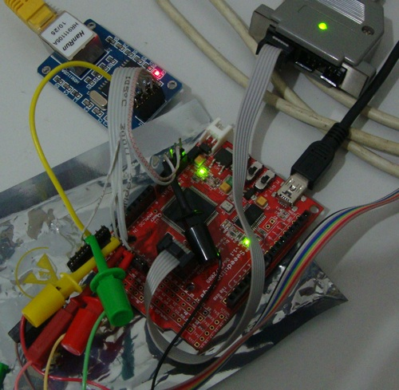

TCP/IP on an AVR microcontroller
Last week I was going through some boards I bought last year which ended up on some pile of electronics trash here and I found this very cheap Microchip ENC28J60 based Ethernet to SPI bridge adapter and thought it would be cool to use it for something.
This little board can be bought on Aliexpress for a price close to US$ 5 or 6.
Here the product's website: ENC28J60 Network Module
I ended up choosing to use and Seeeduino Mega (Arduino Clone) to run the tcp/ip stack and wrote the remaining software myself. I started with one of my preferred RTOS's, ChibiOS/RT which already has a demo for Arduino based boards, thanks to yours truly!
Since there is no SPI driver for AVR based microcontrollers, I ended writing one myself (and contributing back). That was the easiest part, I guess.
After that I created the demo based on an existing uIP (a lightweight TCP/IP stack) demo already available on mainstream ChibiOS/RT but tailoring (or stripping it down) for the AVR.
Since the microcontroller has only 8K for RAM I had to remove the webserver from the demo and enabled the hello world app from uIP which is basically just a listening socket that has functionality similar to an echo server.
The hard part was writing the ENC28J60 driver. I started using a driver from the EtherCard project and porting it to ChibiOS/RT.
After some days of debugging and quite some time lost because I was using a SPI clock (8MHz) which made communication between the Arduino and ENC28J60 unreliable (although far from the limits of the ENC28J60 chip itself which are 20MHz), I finally got to the stage of working ping now.
Ping itself is taking currently takes around 4.5 ms on a cross-over cable which is ok, I guess. Sometimes it doesn't work which sucks. The issue is probably with buffers...
From now on things should get a lot easier and probably very soon this will be production ready.
Finally a photo of my current setup!
The project sources are available for those courageous and crazy enough:
Comments
Comments powered by Disqus